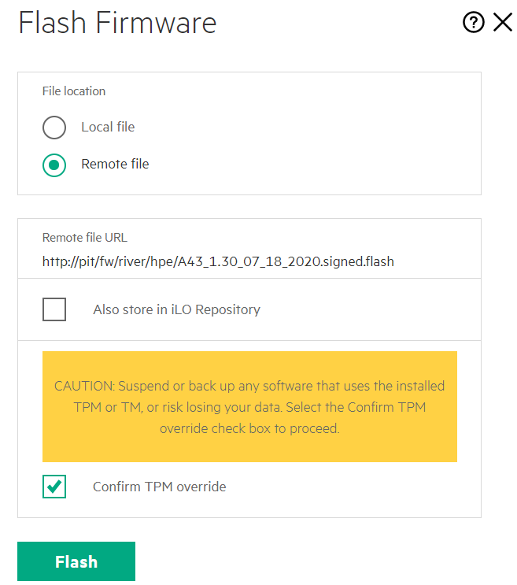

Node Firmware
This page will walk an administrator through NCN BIOS and firmware checkout.
To complete firmware checkout, proceed through the below sections:
Confirm BIOS and Firmware Inventory
CUSTOMER NOTEIf there is doubt that the tar contains latest, the customer should check CrayPort for newer firmware.
-
Prepare the inventory; the RPMs providing firmware need to be installed:
pit# export CSM_RELEASE=<insert the name of the CSM release folder> pit# find /var/www/ephemeral/${CSM_RELEASE}/firmware -name *.rpm -exec zypper -n in --auto-agree-with-licenses --allow-unsigned-rpm {} \+ -
Hide the old firmware; cleanup the directory
NOTEThis step will be removed in later versions of Shasta; this is correcting the layout of the directory.pit# mv /var/www/fw/river /var/www/fw/.river-old -
Set web-links for the new firmware:
pit# \ mkdir -pv /var/www/fw/river/hpe find /opt/cray/fw -name *.flash -exec ln -snf {} /var/www/fw/river/hpe/ \; find /opt/cray/fw -name *.bin -exec ln -snf {} /var/www/fw/river/hpe/ \; mkdir -pv /var/www/fw/river/gb find /opt/cray/FW/bios -name sh-svr* -exec ln -snf {} /var/www/fw/river/gb/ \; mkdir -pv /var/www/fw/mountain/cray find /opt/cray/FW/bios -mindepth 0 -maxdepth 1 -type f -exec ln -snf {} /var/www/fw/mountain/cray/ \; -
Make a tftp symlink for Gigabyte nodes:
pit #ln -snf ../fw /var/www/boot/fw
Identifying BIOS and Hardware
-
Checkout BIOS and BMC firmware with
ipmitool:- From the NCN:
ncn-m002# pdsh -b -w $(grep -oP 'ncn-\w\d+' /etc/hosts | sort -u | tr -t '\n' ',') ' ipmitool fru | grep -i "board product" && \ ipmitool mc info | grep -i "firmware revision" && \ ipmitool fru | grep -i "product version" ' | sort -u - From the LiveCD
pit# \ export mtoken='ncn-m(?!001)\w+-mgmt' export stoken='ncn-s\w+-mgmt' export wtoken='ncn-w\w+-mgmt' export username=root export IPMI_PASSWORD=changeme grep -oP "($mtoken|$stoken|$wtoken)" /etc/dnsmasq.d/statics.conf | xargs -t -i ipmitool -I lanplus -U $username -E -H {} fru | grep -i 'board product' grep -oP "($mtoken|$stoken|$wtoken)" /etc/dnsmasq.d/statics.conf | xargs -t -i ipmitool -I lanplus -U $username -E -H {} mc info | grep -i 'firmware revision'
Manufacturer Examples
-
Gigabyte:
NOTE On Gigabyte, the Product Version can be disregarded. It may become valuable at a later date.
ncn-m001: Board Product : MZ32-AR0-00 ncn-m001: Firmware Revision : 12.84 ncn-m001: Product Version : 0100 ncn-m002: Board Product : MZ32-AR0-00 ncn-m002: Firmware Revision : 12.84 ncn-m002: Product Version : 0100 ncn-m003: Board Product : MZ32-AR0-00 ncn-m003: Firmware Revision : 12.84 ncn-m003: Product Version : 0100 ncn-s001: Board Product : MZ32-AR0-00 ncn-s001: Firmware Revision : 12.84 ncn-s001: Product Version : 0100 ncn-s002: Board Product : MZ32-AR0-00 ncn-s002: Firmware Revision : 12.84 ncn-s002: Product Version : 0100 ncn-s003: Board Product : MZ32-AR0-00 ncn-s003: Firmware Revision : 12.84 ncn-s003: Product Version : 0100 ncn-w001: Board Product : MZ32-AR0-00 ncn-w001: Firmware Revision : 12.84 ncn-w001: Product Version : 0100 ncn-w002: Board Product : MZ32-AR0-00 ncn-w002: Firmware Revision : 12.84 ncn-w002: Product Version : 0100 ncn-w003: Board Product : MZ32-AR0-00 ncn-w003: Firmware Revision : 12.84 ncn-w003: Product Version : 0100 -
HPE:
ncn-m001: Board Product : Marvell 2P 25GbE SFP28 QL41232HQCU-HC OCP3 Adapter ncn-m001: Board Product : ProLiant DL325 Gen10 Plus ncn-m001: Firmware Revision : 2.33 ncn-m001: Product Version : ncn-m001: Product Version : 10/30/2020 ncn-m002: Board Product : Marvell 2P 25GbE SFP28 QL41232HQCU-HC OCP3 Adapter ncn-m002: Board Product : ProLiant DL325 Gen10 Plus ncn-m002: Firmware Revision : 2.33 ncn-m002: Product Version : ncn-m002: Product Version : 10/30/2020 ncn-m003: Board Product : Marvell 2P 25GbE SFP28 QL41232HQCU-HC OCP3 Adapter ncn-m003: Board Product : ProLiant DL325 Gen10 Plus ncn-m003: Firmware Revision : 2.33 ncn-m003: Product Version : ncn-m003: Product Version : 10/30/2020 ncn-s001: Board Product : Marvell 2P 25GbE SFP28 QL41232HQCU-HC OCP3 Adapter ncn-s001: Board Product : ProLiant DL325 Gen10 Plus ncn-s001: Firmware Revision : 2.33 ncn-s001: Product Version : ncn-s001: Product Version : 10/30/2020 ncn-s002: Board Product : Marvell 2P 25GbE SFP28 QL41232HQCU-HC OCP3 Adapter ncn-s002: Board Product : ProLiant DL325 Gen10 Plus ncn-s002: Firmware Revision : 2.33 ncn-s002: Product Version : ncn-s002: Product Version : 10/30/2020 ncn-s003: Board Product : Marvell 2P 25GbE SFP28 QL41232HQCU-HC OCP3 Adapter ncn-s003: Board Product : ProLiant DL325 Gen10 Plus ncn-s003: Firmware Revision : 2.33 ncn-s003: Product Version : ncn-s003: Product Version : 10/30/2020 ncn-w001: Board Product : Marvell 2P 25GbE SFP28 QL41232HQCU-HC OCP3 Adapter ncn-w001: Board Product : ProLiant DL325 Gen10 Plus ncn-w001: Firmware Revision : 2.33 ncn-w001: Product Version : ncn-w001: Product Version : 10/30/2020 ncn-w002: Board Product : Marvell 2P 25GbE SFP28 QL41232HQCU-HC OCP3 Adapter ncn-w002: Board Product : ProLiant DL325 Gen10 Plus ncn-w002: Firmware Revision : 2.33 ncn-w002: Product Version : ncn-w002: Product Version : 10/30/2020 ncn-w003: Board Product : Marvell 2P 25GbE SFP28 QL41232HQCU-HC OCP3 Adapter ncn-w003: Board Product : ProLiant DL325 Gen10 Plus ncn-w003: Firmware Revision : 2.33 ncn-w003: Product Version : ncn-w003: Product Version : 10/30/2020
- From the NCN:
-
Refer to the table below, and use the output from the previous step to map the following information:
- NCN Type:
Board Productmaps to the “Board Product” column - NCN BIOS:
Product Version : 10/30/2020maps to the “Version” column (note: ignore this field for Gigabyte) - NCN BMC Firmware:
Firmware Revisionmaps to the rows for the BMC
IMPORTANT NOTEDo not downgrade firmware unless directed to by the table(s) below. In the event that newer firmware is found, the administrator should return to their Shasta installation and consider this step completed. Only on rare circumstance will certain downgrades be required.BIOS and BMC Firmware Version Reference
CRAY Node Type Manufacturer Board Product Device Type Version Downgrade (Y/n)? LiveCD Location NCN Gigabyte MZ32-AR0 BIOS 21.00.00 YEShttp://pit/fw/river/gb/sh-svr-1264up-bios/bios/RBU/image.RBUNCN Gigabyte MZ32-AR0 BMC 12.84.09 YEShttp://pit/fw/river/gb/sh-svr-1264up-bios/bmc/fw/128409.binCN Gigabyte MZ62-HD0 BIOS 20.03.00 NOhttp://pit/fw/river/gb/sh-svr-3264-bios/bios/RBU/image.RBUCN Gigabyte MZ62-HD0 BMC 12.84.09 NOhttp://pit/fw/river/gb/sh-svr-3264-bios/bmc/fw/128409.binCN Gigabyte MZ62-HD0 CMC 62.84.02 NOhttp://pit/fw/river/gb/sh-svr-3264-bios/bmc/fw/628402.binUAN Gigabyte MZ92-FS0 BIOS 20.03.00 NOhttp://pit/fw/river/gb/sh-svr-5264-gpu-bios/bios/RBU/image.RBUUAN Gigabyte MZ92-FS0 BMC 12.84.09 NOhttp://pit/fw/river/gb/sh-svr-5264-gpu-bios/bmc/fw/128409.binNCN HPE A42ProLiant DL385 Gen10 PlusBIOS 10/30/2020 1.38 NOhttp://pit/fw/river/hpe/A42_1.38_10_30_2020.signed.flashNCN HPE A43ProLiant DL325 Gen10 PlusBIOS 10/30/2020 1.38 NOhttp://pit/fw/river/hpe/A43_1.38_10_30_2020.signed.flashNCN HPE iLO5 BMC 2.33 NOhttp://pit/fw/river/hpe/ilo5_233.binCN CRAY EX235n BIOS ex235n.bios-1.0.3 NOhttp://pit/fw/mountain/cray/ex235n.bios-1.0.3.tar.gzCN CRAY EX425 BIOS ex425.bios-1.4.3 NOhttp://pit/fw/mountain/cray/ex425.bios-1.4.3.tar.gz - NCN Type:
-
For each server that is lower than the items above (except for any downgrade exceptions), run through these guides to update them:
Gigabyte Upgrades
For Gigabyte upgrades a tftp server needs to be referred to.
GUI
-
From the administrators own machine, SSH tunnel (
-Lcreates the tunnel, and-Nprevents a shell and stubs the connection). One at a time, or all together.ssh -L 6443:ncn-m002-mgmt:443 -N $system_name-ncn-m001 ssh -L 7443:ncn-m003-mgmt:443 -N $system_name-ncn-m001 ssh -L 8443:ncn-w001-mgmt:443 -N $system_name-ncn-m001 ssh -L 9443:ncn-w002-mgmt:443 -N $system_name-ncn-m001 ssh -L 10443:ncn-w003-mgmt:443 -N $system_name-ncn-m001 ssh -L 11443:ncn-s001-mgmt:443 -N $system_name-ncn-m001 ssh -L 12443:ncn-s002-mgmt:443 -N $system_name-ncn-m001 ssh -L 13443:ncn-s003-mgmt:443 -N $system_name-ncn-m001 -
One at a time in (to prevent log-outs from duplicate SSL/CA) open each and run through the nested steps:
https://127.0.0.1:6443 https://127.0.0.1:7443 https://127.0.0.1:8443 https://127.0.0.1:9443 https://127.0.0.1:10443 https://127.0.0.1:11443 https://127.0.0.1:12443 https://127.0.0.1:13443-
Login with the default credentials.
-
On the Left, select “Maintenance”
-
In the new pane, select “Firmware Image Location”

-
Configure the TFTP Server:
- Server Address: The HMN IP of the PIT node (
ip a show vlan004) - Image Name: The LiveCD Location from the above table, minus the base URL (e.g.
/fw/river/gb/sh-svr-1264up-bios/bios/RBU/image.RBU) - Press
SAVEwhen done
- Server Address: The HMN IP of the PIT node (
-
Go back to “Maintenance”, then select “Firmware Update”
-
Change the selection to BIOS and then press “Flash”

-
Next. Go back to the “Firmware Image Location” and modify it to fetch the BMC ROM:
-
Press Proceed to Flash; ensure the Update Type is set to BMC
IMPORTANTMake sure to check off “Preserve all configuration” otherwise network connectivity may be lost after reset.
-
-
Now repeat this for m001, however for every location
http://pitis used we need to use127.0.0.1instead. -
Reboot the PIT node back into itself:
pit# bootcurrent=$(efibootmgr | grep -i bootcurrent | awk '{print $NF}') pit# efibootmgr -n $bootcurrent pit# reboot
You are now finished with FW updates.
HPE (iLO) Upgrades
Firmware is located on the LiveCD (versions 1.4.6 or higher).
Pre-Reqs
- BMCs are reachable; dnsmasq is setup and BMCs show in
/var/lib/misc/dnsmasq.leases - Servers can be
off - Static entries in dnsmasq are a bonus; helpful but unnecessary.
GUI
-
From the administrators own machine, SSH tunnel (
-Lcreates the tunnel, and-Nprevents a shell and stubs the connection). One at a time, or all together.ssh -L 6443:ncn-m002-mgmt:443 -N $system_name-ncn-m001 ssh -L 7443:ncn-m003-mgmt:443 -N $system_name-ncn-m001 ssh -L 8443:ncn-w001-mgmt:443 -N $system_name-ncn-m001 ssh -L 9443:ncn-w002-mgmt:443 -N $system_name-ncn-m001 ssh -L 10443:ncn-w003-mgmt:443 -N $system_name-ncn-m001 ssh -L 11443:ncn-s001-mgmt:443 -N $system_name-ncn-m001 ssh -L 12443:ncn-s002-mgmt:443 -N $system_name-ncn-m001 ssh -L 13443:ncn-s003-mgmt:443 -N $system_name-ncn-m001 -
One at a time in (to prevent log-outs from duplicate SSL/CA) open each and run through the nested steps:
https://127.0.0.1:6443 https://127.0.0.1:7443 https://127.0.0.1:8443 https://127.0.0.1:9443 https://127.0.0.1:10443 https://127.0.0.1:11443 https://127.0.0.1:12443 https://127.0.0.1:13443- Login with the default credentials.
- On the Left, select “Firmware & OS Software”
- On the Right, select “Upload Firmware”
- Select “Remote File” and “Confirm TPM override”, and then choose your firmware file:
Remote File URL: Use the “LiveCD Location” value from the table above.Confirm TPM Override: Check this box to confirm the flash. 
- Press
Flashand wait for the upload and flash to complete. iLO may reboot after flash. - Now grab the iLO5 Firmware the same way:
- On the Right, select “Upload Firmware”
- Select “Remote File” and “Confirm TPM override”, and then choose your firmware file:

- Press
Flashand wait for the upload and flash to complete. iLO may reboot after flash.
- Cold boot the node, or momentarily press the button (GUI button) to power it on.
-
After the other nodes are completed, the PIT node can be upgraded. (Alternatively this could be done first):
- Repeat the same process, using the external BMC URL for the PIT node’s BMC (e.g. https://system-ncn-m001-mgmt)
- For the
Remote File URLuse127.0.0.1instead ofpit(e.g. http://127.0.0.1/fw/river/hpe/A42_1.38_10_30_2020.signed.flash) - Before rebooting the node, save any work and set the
BootNextto the current boot sessions device:pit# bootcurrent=$(efibootmgr | grep -i bootcurrent | awk '{print $NF}') pit# efibootmgr -n $bootcurrent pit# reboot
All NCNs are now updated via GUI.
Redfish

Not Ready This LiveCD bash script is broken, and will be fixed. It will allow remote BIOS and firmware updates and checkout from the PIT node.
-
Set login vars for redfish
export username=root export password=changeme -
Invoke
mfwwith the matching firmware (checkls 1 /var/www/fw/river/hpefor a list)pit# /root/bin/mfw A43_1.30_07_18_2020.signed.flash -
Watch status:
pit# curl -sk -u $username:$password https://$1/redfish/v1/UpdateService | jq |grep -E 'State|Progress|Status'"
Component Firmware Checkout
This covers PCIe devices.
Note: The Mellanox firmware can be updated to minimum spec. using
mlxfwmanager. Themlxfwmanagerwill fetch updates from online, or it can use a local file (or local web server such as http://pit/).
Find more information for each vendor below:
| Vendor | Model | PSID | Version | Downgrade (Y/n)? | LiveCD Location |
|---|---|---|---|---|---|
| Marvell | QL41232HQCU-HC | 08.50.78 | NO |
unavailable |
|
| Mellanox | MCX416A-BCA* | CRAY000000001 |
12.28.2006 | NO |
http://pit/fw/pcie/images/CRAY000000001.bin |
| Mellanox | MCX515A-CCA* | MT_0000000011 and MT_0000000591 |
16.28.2006 | NO |
http://pit/fw/pcie/images/MT_0000000011.bin |
Marvell Upgrades
There are no upgrades at this time for Marvell.
Mellanox Upgrades
Shasta 1.4 NCNs are # Print name and current state; on an NCN or on the liveCD.
Enable Tools
MST needs to be started for the tools to work.
linux# mst status
Starting MST (Mellanox Software Tools) driver set
Loading MST PCI module - Success
Loading MST PCI configuration module - Success
Create devices
Unloading MST PCI module (unused) - Success
Check Current Firmware
Some nodes will not have any Mellanox cards. If mlxfwmanager returns with no devices found after mst start was run then this
section should be skipped for that NCN.
-
Start and Run Mellanox Firmware services to check for firmware revision:
linux# mlxfwmanager Querying Mellanox devices firmware ... Device #1: ---------- Device Type: ConnectX5 Part Number: MCX515A-CCA_Ax_Bx Description: ConnectX-5 EN network interface card; 100GbE single-port QSFP28; PCIe3.0 x16; tall bracket; ROHS R6 PSID: MT_0000000011 PCI Device Name: /dev/mst/mt4119_pciconf1 Base GUID: 506b4b030028505c Base MAC: 506b4b28505c Versions: Current Available FW 16.28.4000 N/A PXE 3.6.0103 N/A UEFI 14.21.0021 N/A Status: No matching image found Device #2: ---------- Device Type: ConnectX5 Part Number: MCX515A-CCA_Ax_Bx Description: ConnectX-5 EN network interface card; 100GbE single-port QSFP28; PCIe3.0 x16; tall bracket; ROHS R6 PSID: MT_0000000011 PCI Device Name: /dev/mst/mt4119_pciconf0 Base GUID: 98039b03001eda3c Base MAC: 98039b1eda3c Versions: Current Available FW 16.28.4000 N/A PXE 3.6.0103 N/A UEFI 14.21.0021 N/A Status: No matching image found -
Download and run the update on the NCN
ncn# curl -O http://pit/fw/pcie/images/MT_0000000011.bin ncn# curl -O http://pit/fw/pcie/images/CRAY000000001.bin ncn# mlxfwmanager -u -i ./MT_0000000011.bin -y ncn# mlxfwmanager -u -i ./CRAY000000001.bin -y -
Update the PIT node:
ncn# mlxfwmanager -u -i /var/www/fw/pcie/images/MT_0000000011.bin -y ncn# mlxfwmanager -u -i /var/www/fw/pcie/images/CRAY000000001.bin -y
Optional Online Update
The non-HSN PCIe cards, like the NCN’s management PCIe cards, can obtain updates from the Internet:
- When firmware is not available on the LiveCD and
- Internet access is available to the NCN
Simply run this to update the card, after finding the PCI Device Name in the mlxfwmanager output:
ncn# mlxfwmanager -u --online -d /dev/mst/<mst_device_id>